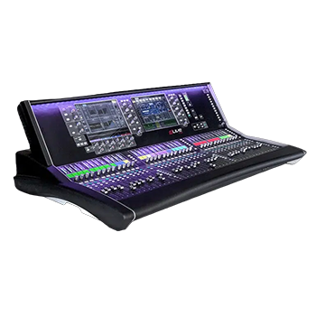

Digital
dLive S7000
Surface for dLive Digital Mixing System
The dLive S7000 is the flagship control surface of the dLive System, purpose-built for the most demanding touring and broadcast productions. It pairs a fully assignable, high-resolution control layout with dLive's ultra-low-latency Class-Compliant Gigabit stagerack architecture, supporting up to 128 processing channels and 64 mix buses.